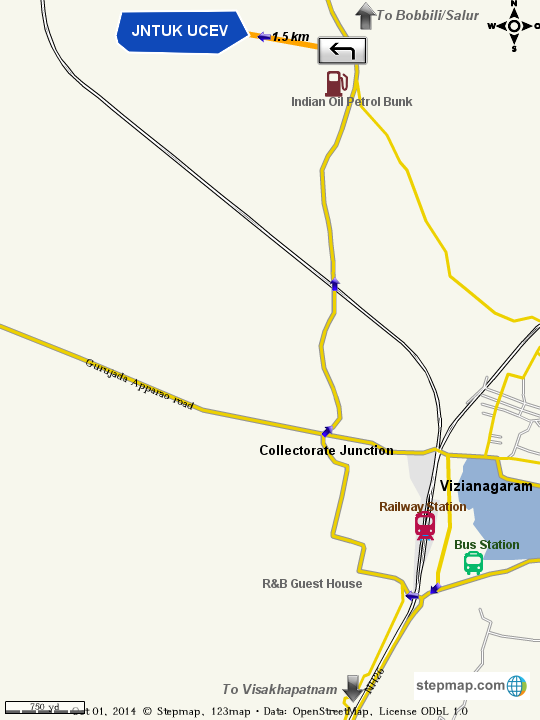

HOW TO REACH?
Vizianagaram can be reached very easily as it is located across the NH43 (National Highway road) and well connected to all the major cities and towns. The city has a railway junction which is on the Chennai – Howrah line and numerous trains like Visakha Express, Konark Express, Howrah Express, East Coast Express, Hirakhand Express and Dhanbad Express halt here. The nearest domestic airport is at Visakhapatnam at a distance of 62 km and the nearest international airport is at Shamshabad, Hyderabad at a distance of nearly 640 km.
From Vizianagaram APSRTC Bus Complex, board any bus going in Saluru – Bobbili Route and disembark by JNTU Bus Stop (around 5.5KM) and walk 1.5 KM west to reach the Campus.
OR
Hire an auto rikshaw from any major point in Vizianagarm to JNTUK UCEV Campus (charges around Rs. 100/-)
Driving Directions form APSRTC Bus Station, Vizianagaram
Head west on Bus Stand Rd towards Railway Station Rd 180 m
Continue straight at Mayura Junction (Traffic Signals) 130 m
At the roundabout, take the 2nd exit and stay on NH 43
Pass by Police Barracks (on the left in 1.1 km) 5.2 km
Pass by Collectorate Junction, KL Puram and RTA Office
Continue on JNTUK- Campus Rd to your destination 2.2 km / 5 min
Turn left onto JNTUK- Campus Rd 1.5 km
Continue straight to reach UCEV
